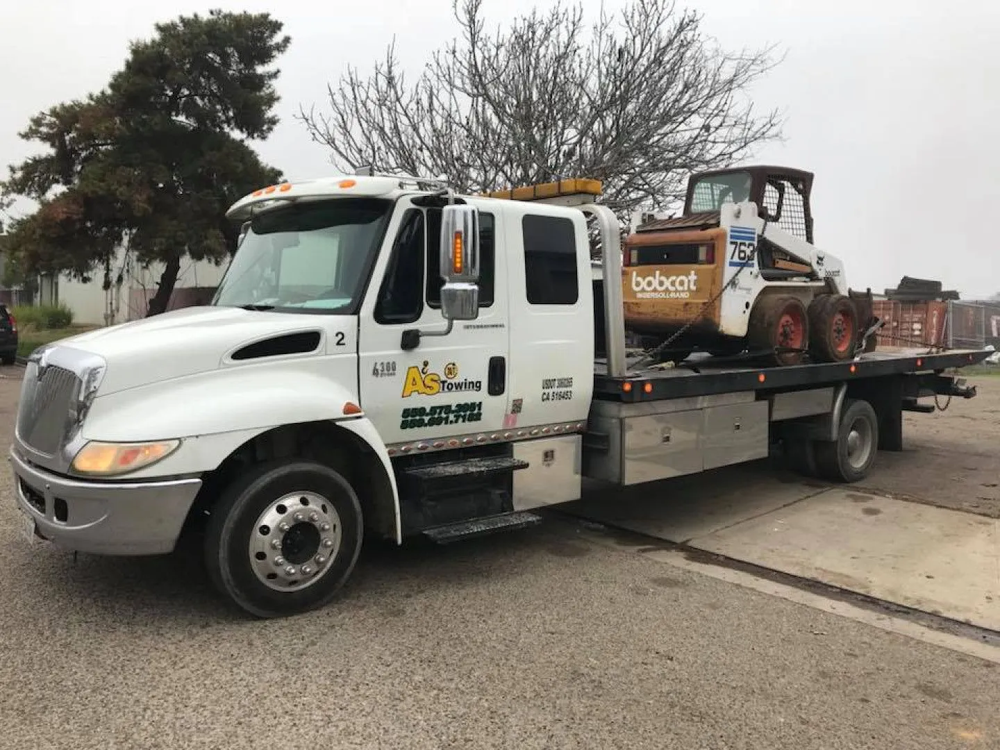

Heavy Trucks & Oversized Loads
Dump trucks, tractors, construction equipment and other vehicles beyond conventional towing capacity are assessed before any lift or recovery begins.
Heavy-duty towing in Fresno for large trucks, construction equipment and vehicles beyond standard tow capacity.

Heavy equipment transportHeavy trucks, oversized vehicles and difficult recoveries require the right towing equipment, careful rigging and a plan built around the actual load and recovery conditions.
Dump trucks, tractors, construction equipment and other vehicles beyond conventional towing capacity are assessed before any lift or recovery begins.
Underlift systems, winching, frame-rated connections and recovery techniques are selected around axle count, damage, terrain and clearance.
Breakdowns, accident recovery and planned relocations can be handled with equipment matched to the vehicle and destination.
Serving Fresno, Clovis and surrounding areas with long-distance capability available for select jobs up to 500 miles. Call with vehicle type, weight and condition for the fastest dispatch.